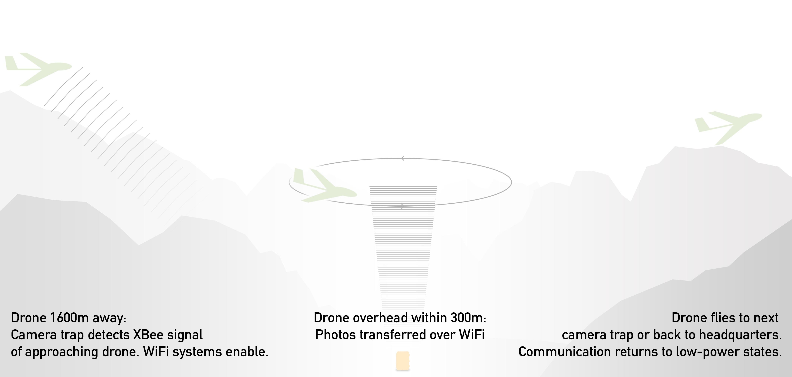
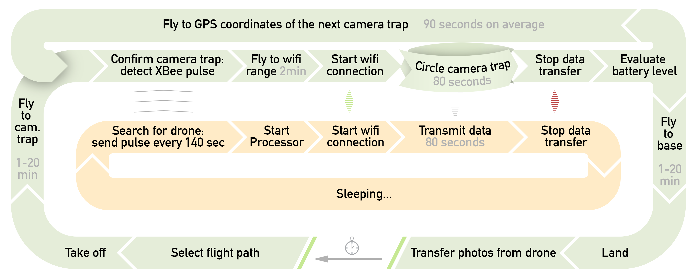

Wadi Drone Prototype Build Documentation
For a brief introduction to the project visit wadi.io.
About this documentation
Wadi Drone was a prototype of a "data mule" (Mobile Ubiquitous LAN Extension), created by an undergraduate research group at NYU Abu Dhabi. This documentation captures many lessons that we learned in creating our prototype (for example work with XBees, Sleepy Pi platform and Raspberry Pi). It includes graphics that we created for your inspiration. We would like to share this knowledge with the world since much of the work was based on open source hardware and software.
Wadi Drone transmission system can work with any platform that supports Pixhawk flight controller, whether it is a plane or a quadcopter. The prototype is essentially a box that could be loaded on any aerial platform and work as a data mule. All the tutorials are available under MIT License without any guarantees.

Operation of a data mule
The below schematic shows the target state operation. In the prototype, we did not achieve full functionality of the system, mainly due to reliability concerns. However, Mission Mule, a company that picked up this project, has made the full version a reality.

MIT License
Permission is hereby granted, free of charge, to any person obtaining a copy of this hardware, software, and associated documentation files (the "Product"), to deal in the Product without restriction, including without limitation the rights to use, copy, modify, merge, publish, distribute, sublicense, and/or sell copies of the Product, and to permit persons to whom the Product is furnished to do so, subject to the following conditions: The above copyright notice and this permission notice shall be included in all copies or substantial portions of the Product.
THE PRODUCT IS PROVIDED "AS IS", WITHOUT WARRANTY OF ANY KIND, EXPRESS OR IMPLIED, INCLUDING BUT NOT LIMITED TO THE WARRANTIES OF MERCHANTABILITY, FITNESS FOR A PARTICULAR PURPOSE AND NONINFRINGEMENT. IN NO EVENT SHALL THE AUTHORS OR COPYRIGHT HOLDERS BE LIABLE FOR ANY CLAIM, DAMAGES OR OTHER LIABILITY, WHETHER IN AN ACTION OF CONTRACT, TORT OR OTHERWISE, ARISING FROM, OUT OF OR IN CONNECTION WITH THE PRODUCT OR THE USE OR OTHER DEALINGS IN THE PRODUCT.